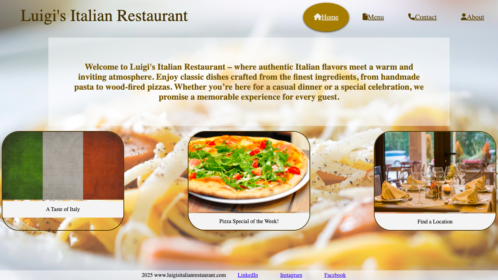

Visit my Luigi's Restaurant Website
Luigi's Restaurant is a fictitious Italian restaurant website I designed from scratch using HTML and CSS. The goal of this project was to create a visually appealing layout that reflected an authentic Italian dining experience. I focused on incorporating warm, inviting colors and elegant typefaces that matched the restaurant theme. Throughout the process, I also learned how to use media queries to ensure the website is fully responsive—meaning it looks great on any screen size, from desktop to mobile. The site includes key sections like a homepage, menu, contact form, and about page.